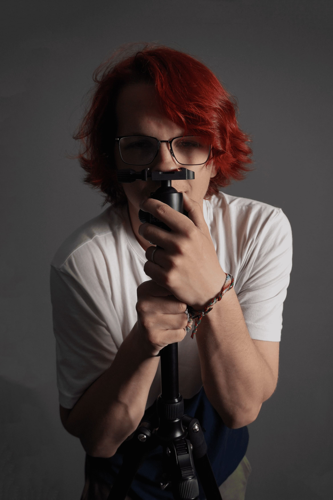
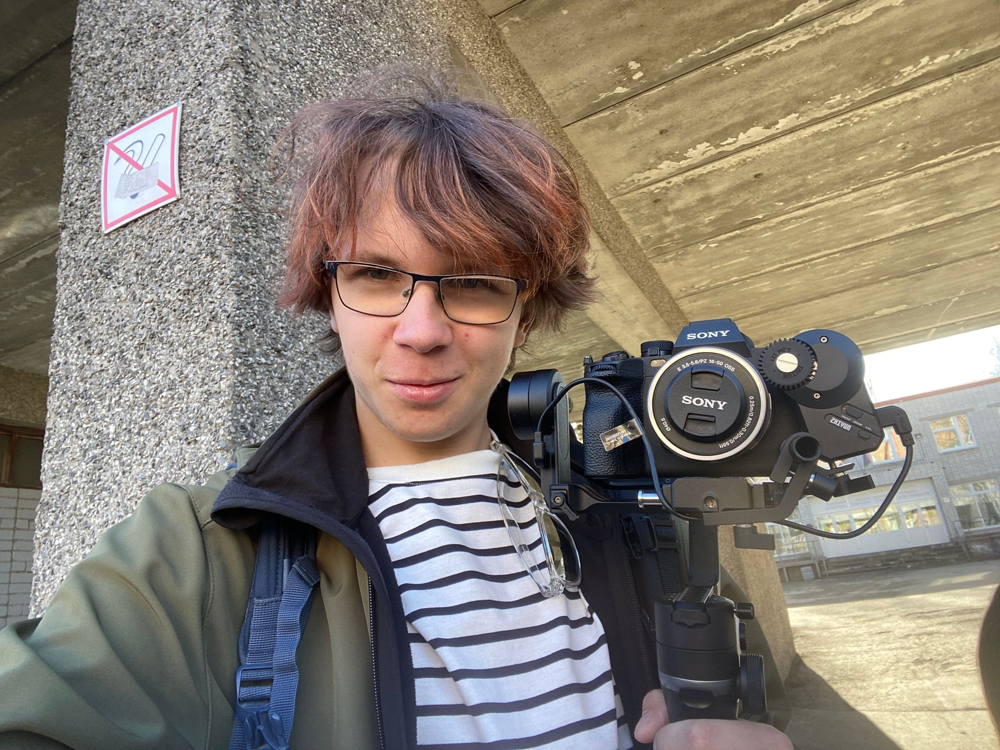

Привет, меня зовут Дима Елагин (Ruby), родился в Петрозаводске, Карелия (Россия). С детства меня тянуло к
сцене и музыкальным инструментам.
Я всегда мечтал выступить на сцене и писать свою музыку. Мой первый концерт я посетил в местном доме
культуры — это была группа «Пикник», а в 2014 году я попал на фестиваль «Воздух-2014».
С детства меня увлекал панк-рок и русские рок-группы (Король и Шут, Князь, Агата Кристи, Кукрыниксы,
Тараканы! участиник группы внесен
Минюстом РФ в список иностранных агентов, Сплин, Сектор Газа).
Всю начальную школу я мечтал писать свою музыку. В классе пятом я забросил
эту идею и увлёкся самолётами, но в восьмом классе мне утром попалась прямая трансляция в Instagram Деятельность Meta Platforms Inc. и
принадлежащих ей социальных сетей Facebook и Instagram
запрещена на территории РФ. группы
Muse перед их концертом. Меня поразил масштаб и вид инструментов, которые «ждут своих музыкантов», и я снова
загорелся идеей о группе. В добавок к этому наша учительница музыки дала мне поиграть на своей гитаре, и я
чётко понял, что хочу гитару. Моей первой электрогитарой стал Fender Squier Bullet MM (RED) — она была
ужасна, но я этого не понимал :) Я пошёл к преподавателю заниматься, через год купил подписную гитару Мэттью
Беллами из Muse, и она стала моей любимой. Ещё через год я купил свою первую кастомную гитару по мотивам
гитары Manson с Floyd Rose, а потом ещё одну.
Серьёзно изучать музыкальную теорию я стал в середине десятого класса. Летом я открыл для себя Понятную
Теорию Музыки (ПТМ) и Мечту Ленивого Гитариста (МЛГ) от канала NO RUST TV и его ведущего Олега Левашова. Я
выражаю ему огромную благодарность за его обучающие материалы, а также за видео-ролики с его размышлениями и
советами о жизни. Благодаря дяде Олегу я поумнел как в практическом плане написания музыки, так и в
душевном. Советую всем интересующимся посетить его телеграм-канал с обучающими материалами и музыкой
собственного написания.
Я только в самом начале пути, и пока моя музыка лишь отдалённо напоминает музыку, но я планирую и дальше в
ней развиваться.
Также помимо музыки я увлекаюсь фото- и видеосъёмкой, мои работы можно увидеть на Pinterest
